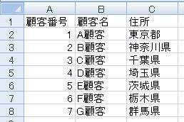
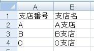
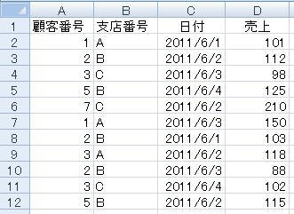
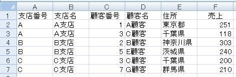
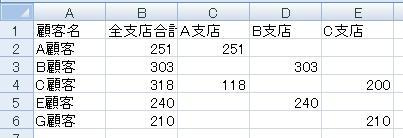

ADOでマスタ付加と集計（SQL）
VBAでADOを使用し、マスターデータよりデータ付加します。




手作業ですと、結構大変です、どのようにやれば良いでしょうか。
シート「データ」にVLOOKUPでマスタから名称を付加し、
その後に、ピボットを使うとかになりますでしょうか。
または、シート「データ」から、支店番号、顧客番号の重複を除いて、他シートに抽出し、
VLOOKUPとSUMIFS(SUMPRODUCT)とかでしょうか。
マクロでやるにしても、上記操作の再現とかになるでしょう。
以下のプログラムでは、ADOを使い、SQL文でこれを実現しています。
Sub test()
Dim objCn As New ADODB.Connection
Dim objRS As
ADODB.Recordset
Dim GYO As Long, COL As Long
Dim strSQL As String
With objCn
.Provider =
"Microsoft.Jet.OLEDB.4.0"
.Properties("Extended Properties") = "Excel
8.0"
.Open ThisWorkbook.Path & "\" & ThisWorkbook.Name
End
With
strSQL = ""
strSQL = strSQL & " SELECT S.支店番号, M2.支店名,
S.顧客番号, M1.顧客名, M1.住所, S.売上合計"
strSQL = strSQL & " FROM"
strSQL =
strSQL & " ((SELECT D.顧客番号, D.支店番号, SUM(D.売上) AS 売上合計"
strSQL = strSQL
& " FROM [データ$] AS D"
strSQL = strSQL & " GROUP BY D.顧客番号,
D.支店番号"
strSQL = strSQL & " ) AS S"
strSQL = strSQL & " LEFT
JOIN [顧客マスタ$] AS M1"
strSQL = strSQL & " ON S.顧客番号 =
M1.顧客番号)"
strSQL = strSQL & " LEFT JOIN [支店マスタ$] AS M2"
strSQL =
strSQL & " ON S.支店番号 = M2.支店番号"
strSQL = strSQL & " ORDER BY
S.支店番号, S.顧客番号"
Set objRS = New ADODB.Recordset
Set objRS =
objCn.Execute(strSQL)
With
Worksheets("集計表")
.Range(.Range("A2"),
.Range("A2").SpecialCells(xlLastCell)).ClearContents
.Range("A2").CopyFromRecordset
objRS
End With
objCn.Close
Set objCn = Nothing
End
Sub
※「参照設定」で「Microsoft ActiveX Data Objects 2.X
Library」を追加して下さい。
.Provider = "Microsoft.ACE.OLEDB.12.0"
.Properties("Extended Properties") = "Excel 12.0"
こちらを使用してください。

Sub test2()
Dim objCn As New ADODB.Connection
Dim objRS As
ADODB.Recordset
Dim GYO As Long, COL As Long
Dim strSQL As
String
Dim i As Long
With objCn
.Provider =
"Microsoft.Jet.OLEDB.4.0"
.Properties("Extended Properties") = "Excel
8.0"
.Open ThisWorkbook.Path & "\" & ThisWorkbook.Name
End
With
strSQL = ""
strSQL = strSQL & " TRANSFORM SUM(D.売上) AS
売上合計"
strSQL = strSQL & " SELECT S.顧客名, SUM(S.売上) AS 全支店合計"
strSQL
= strSQL & " FROM"
strSQL = strSQL & " (SELECT M1.顧客名, M2.支店名,
D.売上"
strSQL = strSQL & " FROM"
strSQL = strSQL & " ([データ$] AS
D"
strSQL = strSQL & " LEFT JOIN [顧客マスタ$] AS M1"
strSQL = strSQL
& " ON D.顧客番号 = M1.顧客番号)"
strSQL = strSQL & " LEFT JOIN [支店マスタ$] AS
M2"
strSQL = strSQL & " ON D.支店番号 = M2.支店番号) AS S"
strSQL = strSQL
& " GROUP BY S.顧客名"
strSQL = strSQL & " PIVOT S.支店名"
Set
objRS = New ADODB.Recordset
Set objRS =
objCn.Execute(strSQL)
With
Worksheets("クロス集計")
.Cells.ClearContents
.Range("A2").CopyFromRecordset
objRS
For i = 0 To objRS.Fields.Count - 1
Cells(1, i + 1) =
objRS.Fields(i).Name
Next
End With
objCn.Close
Set
objCn = Nothing
End Sub
クロス集計クエリです。
の部分は、objRSをループさせて、値を入れていることが多いのですが、
同じテーマ「マクロVBAサンプル集」の記事
VBAでのCSVの扱い方まとめ
CSVの読み込み方法
CSVの読み込み方法（改）
CSVの読み込み方法（改の改）
CSVの読み込み方法（ジャグ配列）
CSVの読み込み方法（ジャグ配列）（改）
CSVの出力（書き出し）方法
UTF-8でCSVの読み書き（ADODB.Stream）
ADOでマスタ付加と集計（SQL）
ADOでマスタ更新（SQL）
ADOでCSVの読み込み（SQL）
新着記事NEW ・・・新着記事一覧を見る
VBA100本ノック 100本目：WEBから100本ノックのリストを取得｜VBA練習問題（3月3日）
VBA100本ノック 99本目：自動席替え（行列と前後左右が全て違うように）｜VBA練習問題（3月2日）
VBA100本ノック 98本目：席替えルールが守られているか確認｜VBA練習問題（3月1日）
VBA100本ノック 97本目：Accessデータを取得（グループ集計）｜VBA練習問題（2月27日）
VBA100本ノック 96本目：Accessデータを取得（マスタ結合&抽出）｜VBA練習問題（2月26日）
VBA100本ノック 95本目：図形のテキストを検索するフォーム作成｜VBA練習問題（2月24日）
VBA100本ノック 94本目：表範囲からHTMLのtableタグを作成｜VBA練習問題（2月23日）
VBA100本ノック 93本目：複数ブックを連結して再分割｜VBA練習問題（2月22日）
VBA100本ノック 92本目：セルの色を16進で返す関数｜VBA練習問題（2月20日）
VBA100本ノック 91本目：時間計算（残業時間の月間合計）｜VBA練習問題（2月19日）
アクセスランキング ・・・ ランキング一覧を見る
1.最終行の取得（End,Rows.Count）｜VBA入門
2.RangeとCellsの使い方｜VBA入門
3.変数宣言のDimとデータ型｜VBA入門
4.マクロって何？VBAって何？｜VBA入門
5.Range以外の指定方法（Cells,Rows,Columns）｜VBA入門
6.セルのコピー&値の貼り付け（PasteSpecial）｜VBA入門
7.繰り返し処理（For Next)｜VBA入門
8.セルに文字を入れるとは（Range,Value）｜VBA入門
9.マクロはどこに書くの（VBEの起動）｜VBA入門
10.とにかく書いてみよう（Sub,End Sub）｜VBA入門
- ホーム
- マクロVBA応用編
- マクロVBAサンプル集
- ADOでマスタ付加と集計（SQL）
このサイトがお役に立ちましたら「シェア」「Bookmark」をお願いいたします。
記述には細心の注意をしたつもりですが、
間違いやご指摘がありましたら、「お問い合わせ」からお知らせいただけると幸いです。
掲載のVBAコードは動作を保証するものではなく、あくまでVBA学習のサンプルとして掲載しています。
掲載のVBAコードは自己責任でご使用ください。万一データ破損等の損害が発生しても責任は負いません。